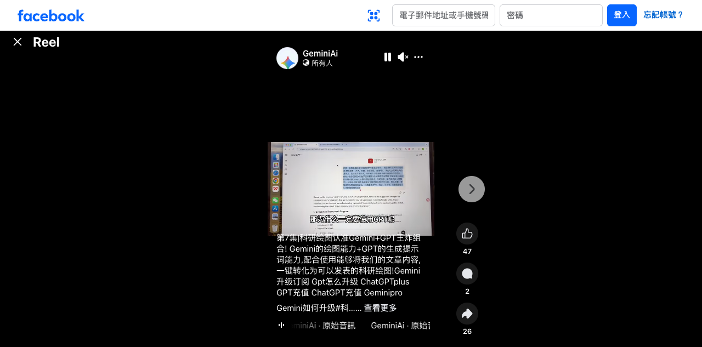

GeminiAi｜Gemini + GPT 科研繪圖教學：文章內容轉圖的工作流與導流風險

為什麼保存
這則 Reel 值得保存，不是因為它證明「AI 可以一鍵產出可發表科研圖」，而是它代表一種越來越常見的教學包裝：用 GPT 類工具負責摘要、結構化與 prompt，再用 Gemini 的圖像生成/編輯能力產出視覺草稿。
對課程與研究工作流來說，這可以作為「AI 協助科研視覺化」的案例；但必須把它與正式論文圖、統計圖、實驗示意圖的嚴格要求分開。
Facebook 可見內容
原始分享連結導向 canonical：`https://www.facebook.com/reel/1905773773669810`。未登入狀態下可見資訊如下：
- 作者：GeminiAi。
- 文案可見片段：「第7集｜科研绘图认准 Gemini+GPT 王炸组合！」「Gemini 的绘图能力 + GPT 的生成提示词能力，配合使用能够将我们的文章内容，一键转化为可以发表的科研绘图！」
- 其他可見關鍵字：Gemini 升級訂閱、Gpt 怎麼升級、ChatGPTplus、GPT 充值、ChatGPT 充值、Geminipro、Gemini 如何升級。
- 音訊：GeminiAi · 原始音訊。
- 可見互動：47 個讚、2 則留言、26 次分享。
- 影片畫面：瀏覽器中的 GPT/ChatGPT 類文字工具畫面，字幕可見「那為什麼一定要使用 GPT 呢」，顯示內容重點在解釋 GPT 在提示詞/文字整理中的角色。
可拆解的工作流
依可見文案與畫面，這類流程可拆成四步：
- 從論文段落、摘要或研究構想中整理關鍵概念。
- 用 GPT 類工具把概念改寫成圖像生成 prompt、圖說、版面需求或視覺元素清單。
- 用 Gemini 圖像生成/編輯工具產生科研示意圖或概念視覺草稿。
- 由研究者人工校對：資料關係、標籤、單位、圖例、統計含義、引用與期刊格式。
官方來源查核
Gemini 官方圖像生成頁確認：Gemini 提供 AI 圖像生成與相片編輯能力，可用文字描述生成或修改圖像。
Gemini Help〈Generate & edit images with Gemini Apps〉可讀，確認 Gemini Apps 支援生成與編輯圖片，但實際功能、限制與可用性仍依帳號、地區、方案與產品當下狀態而定。
OpenAI Help / ChatGPT Plus 官方頁在本次環境中被 Cloudflare 擋住，因此本文不把「ChatGPTplus」「GPT充值」「升級訂閱」等貼文關鍵字視為已查核官方資訊；它們只被保存為社群文案中的導流語。
導流 framing 標註
以下語句具有明顯行銷或導流意味，不應被當成效果保證：
- 「王炸組合」：誇飾式形容。
- 「一鍵轉化為可以發表的科研繪圖」：把複雜研究圖審查簡化為單步驟，容易誤導。
- 「Gemini 升級訂閱」「GPT 怎麼升級」「ChatGPTplus」「GPT 充值」「ChatGPT 充值」「Geminipro」：疑似導向付費升級、代充或帳號服務內容；需特別警惕非官方代充、帳號安全與付款風險。
對欒帥的可用改寫
- 研究生課程：把這則當作反例與正例並列，示範「AI 可幫忙產生視覺草稿，但不能替代科研圖審查」。
- Prompt 工作坊：讓學生把摘要轉為 prompt，再比較 Gemini 產出的圖與原研究關係是否一致。
- 教材產圖：適合做概念圖、流程圖、課程封面草稿；不適合直接做實驗結果圖或統計圖。
- AI 素養討論：用「一鍵可發表」這句話帶出研究誠信、AI 生成內容標示、圖像版權與期刊政策。
風險與限制
- 科研圖若包含數據、統計、實驗流程或機制圖，AI 生成圖可能產生錯誤標籤、錯置箭頭、虛構結構或不存在的實驗關係。
- 「可發表」需符合期刊/會議規範、研究倫理、資料可追溯性與圖像處理政策，不是畫面美觀即可。
- 若使用 AI 生成圖片作為論文或簡報素材，需確認 Gemini / ChatGPT /圖像工具的使用條款、生成內容授權、引用方式與是否需揭露 AI 參與。
- 涉及 ChatGPT Plus、Gemini Pro、充值或代充服務時，只應使用官方付款與帳號渠道，避免共享帳號、代充詐騙、憑證外洩或違反服務條款。
- Facebook 未登入狀態下無法取得完整影片與完整文案；本文僅根據可見畫面、可見文案與官方資料整理。
來源
- Facebook Reel：<https://www.facebook.com/reel/1905773773669810>
- Gemini 圖像生成：<https://gemini.google/overview/image-generation/>
- Gemini Help：<https://support.google.com/gemini/answer/14286560>